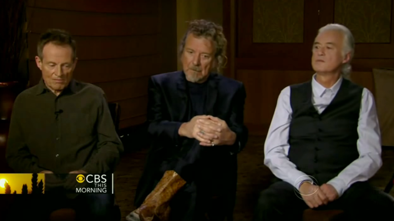

The publication of Ross Halfin’s coffee table book “Led Zeppelin Vinyl” has been pushed back again, this time to August 24.
“Led Zeppelin Vinyl: The Essential Collection” is a 216-page, 30cm by 30cm hardback book that features more than 300 illustrations of rare Led Zeppelin vinyl records, including international pressings and bootlegs

Led Zeppelin's offical documentary is causing rare footage to vanish from the internet
Footage of Led Zeppelin performing at the Laurel Pop Festival in Maryland on July 11, 1969
had been available to watch on YouTube for more than a year but has been removed
because the filmmakers producing the documentary are planning to include it in
Led Zeppelin’s official film.